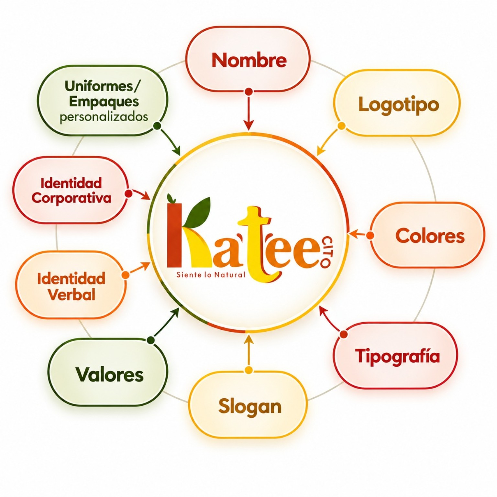
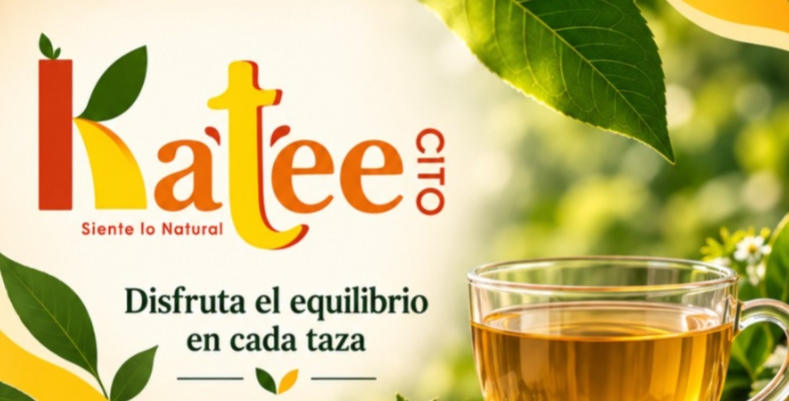

Identidad visual
Logotipo, colores corporativos, tipografía y elementos gráficos que hacen reconocible a la marca.
Información organizada de identidad corporativa.
Es el conjunto de características, valores y elementos que permiten reconocer a Ka'tée Cito y diferenciarla de otras marcas. Expresa nuestra esencia natural y cercana.

Logotipo, colores corporativos, tipografía y elementos gráficos que hacen reconocible a la marca.
Valores, costumbres y comportamientos que guían nuestro trabajo y la relación con los consumidores.
La forma de comunicar nuestra esencia, con un lenguaje natural, amable y cercano.
Ka'tée Cito reúne su identidad visual, cultural y verbal para transmitir calidad, frescura y compromiso con la naturaleza.
